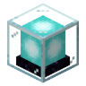

MC 信标范围与材料金字塔层数 → 效果半径、可用效果、要挖多少矿
| 层（自下往上） | 边长 | 本层方块 | 累计 |
|---|
| 材质 | 方块 | 换算 | 合计 |
|---|
20 / 30 / 40 / 50 格，底座边长由 9×9 起每层减 2，
累计方块数 81 / 130 / 155 / 164（81+49=130，+25=155，+9=164）。效果按层解锁：1 层给速度、急迫，
2 层加抗性提升与跳跃提升，3 层加力量，4 层把速度/急迫/跳跃提升升到 II 级（抗性、力量仍是 I 级）。
信标本体 = 3 黑曜石 + 5 玻璃 + 1 下界之星。底座只认铁块、金块、钻石块、绿宝石块、下界合金块，
紫水晶块、青金石块、红石块都不行 —— 别照着「看起来贵」的方块搭。数据范围：Java 版 1.20 – 1.21。